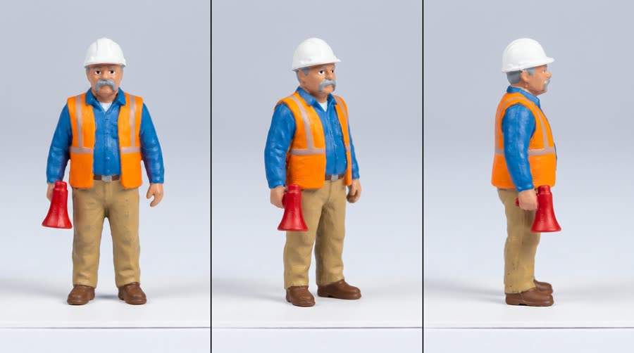
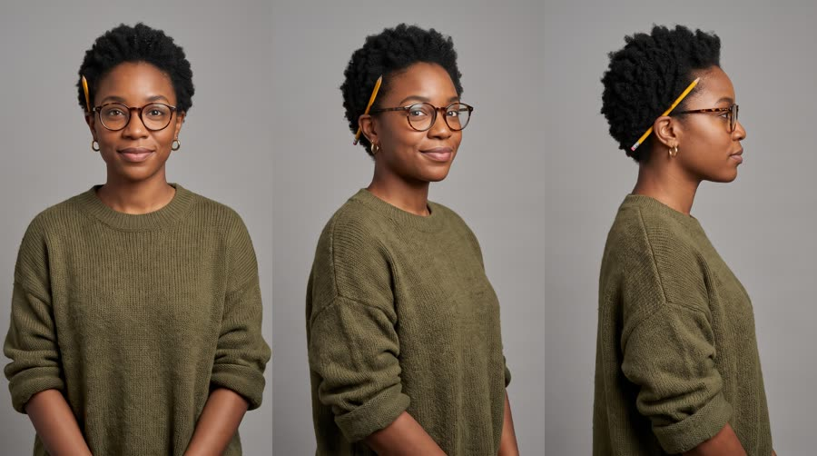
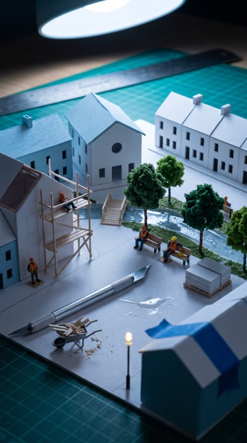
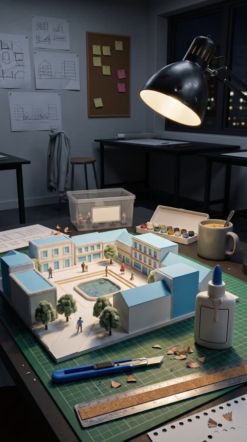
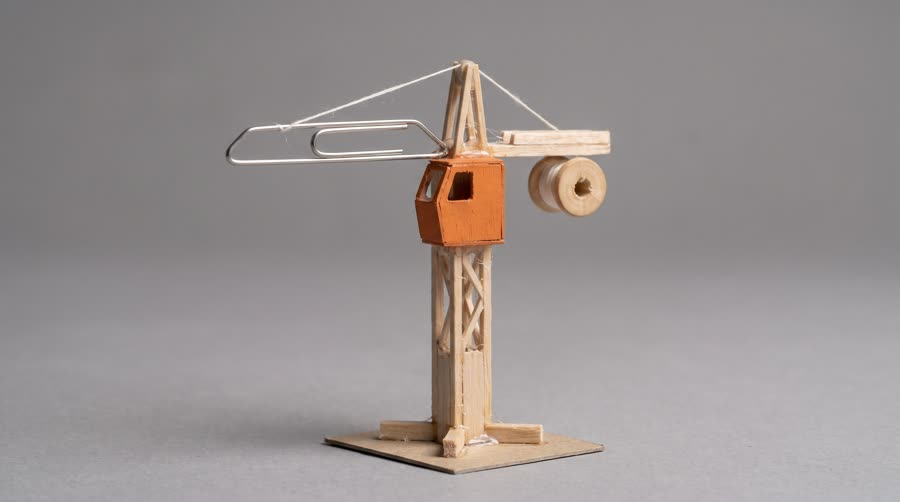
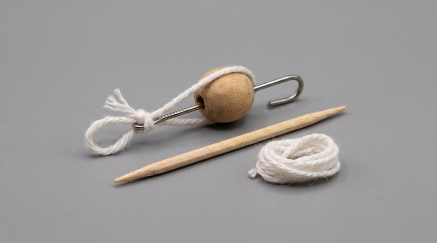

Night Build
2am in a tiny model town. The review is at nine, the whole crew has fallen asleep on the job, and the foreman calls in the big one: Red Bull Sugarfree. Then the camera pulls back.
Scale contrast makes the product the biggest, most important object on screen without any hard sell, and the handmade detail rewards a second watch. Miniature and tilt-shift AI video is reported as one of the fastest-growing formats on Instagram in 2026, and polished diorama spots have had viewers debating whether they were real. The reveal gives a built-in twist at the midpoint that holds viewers past 15 seconds.
Contact sheet
One keyframe per shot, with the caption as it will appear.


Cast and world

Voice: gravelly, warm, bossy in a loving way, Mexican American, natural adult voice

Voice: soft, warm, tired but amused, American


World. Riverside Commons, a fictional 1:87 scale architectural model of a small town square with houses, a clock-less civic hall, trees and a river, built on the desk of an architecture grad student at the fictional Kellerman School of Architecture. The tiny figurines are alive; she is the giant who works with them. Palette. Chalky sky blue, silver-grey card and white buildings (echoing the can), warm amber window lights, orange hi-vis vests on the tiny crew; the real desk is warm wood and a green cutting mat.
Fictional brands. Riverside Commons (the model project); Kellerman School of Architecture (her school); Oakbridge Model Supply (the glue bottle and figurine box, shown with blank labels in frame)
World bible
Fixed with the concept: the lore, the objects and the textures that make this world specific. Only product-adjacent props change per product.
- Riverside Commons is Amara Cole's final thesis model at the Kellerman School of Architecture: 46 hand-cut buildings at 1:87 scale on a 90 by 120 cm board. Her jury review is at 9am in Room 3B with three visiting critics.
- It is 2:10am. She has been awake for 20 hours, the resin river was poured on Tuesday and still smells faintly sweet, and the civic hall roof has fallen off twice tonight.
- Sal is one of 72 figurines from a box of Oakbridge Model Supply workers she bought in first year. He is the only one she repainted by hand, and his grey walrus mustache is a single dab of paint from a size 000 brush.
- The tiny crew builds whatever she forgets. Their rule: nothing gets finished after midnight without the foreman's say so.
- The paved square in the middle is left empty on purpose: it is the one space in the plan she has never been able to design.
Materials. Everything in the tiny world is real model-making material seen at macro: white museum board and foam core with slightly fuzzy knife-cut edges, basswood and balsa strips, chalky sky-blue card, flocked foam trees on twisted wire trunks, two-part clear resin water with trapped bubbles, 2 cm hand-painted plastic figurines on small card bases with visible brush strokes, thin glue strings at the joins, faint pencil guide lines, pins and blue painter's tape holding pieces that are still drying. Everything from the real world (the can, her hands, her tools) is full-size and photoreal, enormous next to the model.
Wear and time. 2:10am on the night before the review, then the bright 9am review room. Cool blue night light with one warm lamp pool. Used: a snapped knife blade, a cold coffee, half the glue bottle. Out of place: the civic hall roof sits crooked, one tree has fallen into the river, a figurine is asleep in the wheelbarrow.
Signature objects


Set dressing by location
Foreground
a dropped snapped-off craft-knife blade lying across the paving like a giant steel beam; a tiny wheelbarrow heaped with balsa offcuts and sawdust; a pin-head street lamp glowing from a grain-of-rice warm light; a strip of blue painter's tape holding a loose card roof down; a dried clear glue drip on the paving like a frozen puddle
Midground
balsa-strip scaffolding tied with glue strings against a half-built card house; faint pencil guide lines still visible on the bare white card walls; flocked foam trees in two greens on twisted wire trunks; the clear resin river with trapped air bubbles and a toothpick footbridge; two figurines asleep on a basswood bench, one with his hard hat tipped over his eyes; a stack of tiny white card wall panels waiting on a pallet made of coffee stirrers
Background
the civic hall with its plain round window and a roof that sits slightly crooked; a row of finished white card terraces with dark punched windows; the edge of the green cutting mat with its faint grid lines; the huge soft glow of the angled desk lamp far above; an enormous out-of-focus steel ruler lying beyond the board like a distant highway
Foreground
a craft knife with a blue grip and a snapped blade; a cork-backed steel ruler with worn edge marks; a squeeze bottle of white glue with a blank label and a dried drip down the side; curls of pencil shavings and hole-punched card dots on the mat
Midground
the handmade white and sky-blue card model of the town square on a green cutting mat; a clear plastic figurine box with a blank label and a few spare painted figurines; an open plastic tray of tiny paint pots with dried rings on the lids; an angled black desk lamp with a dented shade; a cold coffee in a chunky grey mug with a spoon left in it
Background
loose line sketches and elevation drawings pinned to the wall with pushpins; a corkboard of blank sticky notes in yellow and pink; a dark window with blurred city lights; a grey hoodie hanging off the back of a stool; other empty studio desks in the dark behind
- Sal: a tiny red megaphone with a paint chip on the rim showing white plastic; a white hard hat with a grey scuff where he was dropped on the floor; a clipboard made from a square of card smaller than a grain of rice; a pencil-lead crowbar he carries over his shoulder
- Amara: a yellow pencil tucked into her hair, its end chewed; round tortoiseshell glasses with a strip of blue tape on one arm; an olive sweater with dried white glue flecks on one cuff; a small plaster cut on her left thumb from the craft knife
- Riverside Commons: a sky-blue wavy line under a simple house outline, sky blue and white. On: the corner of the model board, the jury title card. Text in post: project name on the end card only
- Kellerman School of Architecture: a plain black square with a white arch, black and white. On: a sticker shape on the cutting mat corner. Text in post: none
- Oakbridge Model Supply: a small oak leaf, forest green on cream. On: the figurine box and glue bottle (labels blank in frame). Text in post: none
the tinny squeak of Sal's megaphone; tiny figurine snores; the creak of balsa scaffolding; the deep boom of a full-size can landing on card; a thread rope straining, then the crack of the ring pull; tiny hammer taps and card sliding into slots; the hum of the desk lamp; a real sip and a tired laugh
Beats
| Time | Beat | What happens |
|---|---|---|
| 0-2.6 | hook | Macro close on the tiny foreman on a dark rooftop, megaphone up, deadline in one line. |
| 2.6-7.0 | setup | The tiny crew asleep all over the unfinished model; the foreman calls in the big one. |
| 7.0-14.2 | product | A giant hand sets the full-size can in the square like a monument; the crew cracks it open with ropes; the brand line. |
| 14.2-20.6 | build | The town lights up and the crew builds; the camera pulls back to reveal the student at her desk, who picks up the same can and drinks. |
| 20.6-25.0 | payoff | 9am: the finished model at the review, the jury applauds, the foreman gives a thumbs up. |
| 25.0-30 | cta | Morning light on the desk: the can standing in the finished square, tiny crew resting around it, tagline. |
Screenplay
30 spoken words in 30 s. Each line keeps its intent (fixed in the template) and its wording (written for this product).
| Time | Speaker | Line | Intent (template) |
|---|---|---|---|
| 0.3-2.5 | Sal | Review's at nine. This town's asleep. gravelly, exasperated, into the megaphone | Hook: a surprising character states a deadline the viewer instantly feels. |
| 5.0-6.6 | Sal | Bring in the big one! shouted up at the sky, megaphone raised | The call for help that brings the product in. |
| 11.6-14.0 | Sal | Red Bull Sugarfree. Wide awake, no sugar. proud, like unveiling a monument, hand on the can · Say: RED BULL SHUG-er-free, three clear words | Product line: name the product and the benefit the tiny world needs, using an allowed claim only. |
| 18.6-20.4 | Amara | Okay, team. One more street. soft, amused, leaning over the model with the can | The reveal: the real person joins the tiny crew as one team. |
| 22.6-24.6 | Sal | Nine a.m. Nailed it. satisfied, thumbs up to the lens | Payoff: the deadline is beaten, said by the character who set it. |
| 27.2-29.2 | Amara (off camera) | Wiiings without sugar. warm, smiling voiceover · Say: WINGS, stretch the vowel slightly | Tagline in the brand's own words. |
Generation plan
U1 · 0 to 7.0 s · 7 s generation
Shots S01, S02, S03 · References: sal card, town plate, S01 keyframe as first frame
9:16 tilt-shift macro footage of a handmade 1:87 miniature town at night, hand-painted 2 cm figurines that move in stepped stop-motion while the camera glides smoothly. Shot 1 (0 to 2.6 s): probe-lens push-in on @Image1 (Sal, the foreman figurine) on a card rooftop, megaphone up, he says in a gravelly voice: "Review's at nine. This town's asleep." Shot 2 (2.6 to 4.6 s): high-angle tilt-shift slide over the town from @Image2, tiny crew asleep on scaffolding, a bench and in a wheelbarrow. Shot 3 (4.6 to 7 s): low angle in the empty square, Sal shouts up through the megaphone: "Bring in the big one!" and a huge soft shadow falls across him. Natural adult voice, close-miked, not sped up. Native sound: tiny snores, card creaks, rushing air. No music. No text, no signs.
U2 · 7.0 to 14.2 s · 8 s generation · exact-risk (short, cheap to re-roll)
Shots S04, S05, S06 · References: product can official, sal card, S04 keyframe as first frame
9:16 tilt-shift macro, handmade miniature town. Shot 1 (0 to 2.4 s): a normal-size adult hand sets the exact can from @Image1, a real full-size can, upright in the centre of the tiny square, towering over the card houses like a skyscraper, label to camera; the tiny figurines stare up. Shot 2 (2.4 to 4.4 s): macro on the lid, three tiny crew figurines heave on a rope tied to the ring pull, it cracks open and cold mist bursts up like a geyser. Shot 3 (4.4 to 8 s): low angle at the base, @Image2 (Sal) rests a hand on the open can like a monument and says proudly: "Red Bull Sugarfree (said RED BULL SHUG-er-free, three clear words). Wide awake, no sugar." The can is photographically exact, keeps its shape, colours, red wordmark, two red bulls, gold sun and SUGARFREE as @Image1, and never shrinks. Only one can. Native sound: a deep monument thud, tiny gasps, a heave-ho, the can crack like thunder, fizz. No music.
U3 · 14.2 to 25.0 s · 11 s generation
Shots S07, S08, S09 · References: town plate, amara card, desk plate, sal card, S07 keyframe as first frame
9:16 miniature to human scale. Shot 1 (0 to 2.8 s): high-angle tilt-shift slide over @Image1 (the model town), every tiny window switches on warm amber, the figurines wake and build in stop-motion, a toy crane swings a roof in, the open can towers in the square. Shot 2 (2.8 to 6.4 s): one continuous pull-back and rise reveals the town is a card model on a desk at 2am; @Image2 (Amara) lifts the same open can out of the square, takes a sip, lowers it to chin height with the label readable and says softly: "Okay, team. One more street." Shot 3 (6.4 to 11 s): a bright review room at 9am, the finished model on a plinth, @Image4 (Sal) in sharp macro foreground gives a thumbs up to the lens and says: "Nine a.m. Nailed it." while Amara presents out of focus and blurred jurors applaud. The desk and model match @Image3. Only one can. Native sound: tiny hammering, crane whirr, desk lamp buzz, applause. No music. No text.
U4 · 25.0 to 30 s · 5 s generation · exact-risk (short, cheap to re-roll)
Shots S10 · References: product can official, town plate, S10 keyframe as first frame
9:16 tilt-shift macro pack shot in golden morning window light. Slow motion-control push toward the exact can from @Image1, a real full-size can, standing open and upright in the centre of the finished miniature square from @Image2, label to camera, condensation drops, tiny painted figurines resting and picnicking around its base, one waving slowly in stop-motion. The can does not move or change shape. Keep the top third as soft empty blur. Native sound: birds outside the window, a tiny contented sigh. No music, no text.
Sound, music, voice, captions
| 0 to 7.0 s | night | Sparse pizzicato strings and a music-box celesta in a sleepy lullaby waltz, D major, 84 bpm, leaving room for the tiny voice. |
| 7.0 to 14.2 s | the big one | A timpani roll and a tiny brass fanfare as the can lands, a glockenspiel sparkle on the crack, then the waltz switches to a brisk 4/4. |
| 14.2 to 25.0 s | build and reveal | Busy plucked strings and brushed snare like a workshop montage, opening into full warm strings on the pull-back reveal and a small triumphant lift for 9am. |
| 25.0 to 30 s | morning | The lullaby melody returns in daylight on celesta and warm strings, resolving on a gentle held chord. |
Added sound
- 10.2 s: can crack sweetened as thunder at tiny scale, then fizz (the product moment must register and sell the scale gag)
- 8.0 s: deep monument thud as the can lands (tells the ear the can is enormous in this world)
- Sal: native voice from U1, then his U1 vocal stem as voice reference for U2 and U3; natural adult pitch, never chipmunked
- Amara: native in U3, her U3 stem as voice reference for the tagline voiceover
font: Recoleta SemiBold, size: 4.8% of frame height, color: #1E2A3A on a cream #FFF6E6 rounded label with a hairline #1E2A3A border, active word: the spoken word underlined in sky blue #6CB8E6, shadow: soft 0 3px 6px rgba(0,0,0,.25) under the label, as if it is a paper tag in the model, position: centre, 70% down the frame, inside the tilt-shift blur band so it never covers the in-focus figurine, max words on screen: 5, box: True, scale labels: in post, a small handwritten-style tag (like a model-shop label) names the scale on the reveal: 1:87, then 1:1
Post text- 0.2 to 2.4 s: Riverside Commons, 2:00 a.m. / (small cream model-shop tag with a hairline border, Recoleta, top left, as if pinned into the model)
- 17.2 to 18.4 s: 1:87 / (handwritten-style scale tag, cream label, next to the model as the pull-back starts)
- 18.4 to 19.8 s: 1:1 / (the same tag flips to 1:1 when Amara comes into frame)
- 20.8 to 22.4 s: Final review, 9:00 a.m. / (cream model-shop tag, top left)
- 26.8 to 30 s: Red Bull Sugarfree / Wiiings without sugar (Recoleta SemiBold, deep navy on a cream rounded label, centred in the soft blur above the can, fades up 8 frames)
Adaptation contract
How this same concept takes any physical product.
| Product type | Where it sits in the story | Scale |
|---|---|---|
| ingested | the giant can lands in the square, the tiny crew cracks it open with ropes, and the lights come on; after the reveal she drinks from it | giant in the tiny world, hand in the real one |
| applied | a giant tube or jar lands in the square and the tiny crew rolls it out like paint across the town, which wakes it up | giant in the tiny world, hand in the real one |
| worn | the giant shoe, watch or glasses lands in the square and becomes the tiny crew's new building or vehicle | giant in the tiny world, body in the real one |
| handheld | the giant gadget lands in the square and the tiny crew switches it on; its light or sound wakes the town | giant in the tiny world, hand in the real one |
| carried | the giant bag is set down in the square and the tiny crew unzips it like a warehouse door | giant in the tiny world, lap in the real one |
| home | the tiny town is built on or around the real product (lamp, chair, pillow) which becomes its sun, hill or roof | the product is the landscape |
| consumable | the tiny crew unpacks the giant refill or pack with a crane and distributes it through the town | giant in the tiny world, hand in the real one |
Style bible
Look. Everything in the tiny world is visibly handmade: hand-painted 1:87 scale figurines with slight paint imperfections and glossy eyes, balsa and card buildings, flocked foam grass, cotton-wool steam, resin water, grain-of-wheat bulbs in the windows. Tilt-shift optics: a thin band of focus and heavy blur above and below, so real scenes look toy-like and toy scenes look real. The real product is always photographically exact and life-size relative to the world, never shrunk. Human-scale objects (a hand, a pencil, a glue bottle) appear at the edges as giant landmarks. Figurines stay in fixed painted poses between moves, like stop-motion.
Camera. Macro probe lens at figurine eye level for dialogue, high-angle tilt-shift wides for the world, slow motion-control slides and cranes that feel mechanical, a single continuous pull-back from tiny to human scale for the reveal. Figurine motion is stepped at 12 fps like stop-motion; the camera itself moves smoothly at 24 fps. Product inserts are locked.
Light and texture. Practical miniature lighting: warm tiny bulbs inside windows and streetlamps, a desk lamp as the moon at night, a big soft window as the morning sun. Night scenes are blue with warm pinpoints; the product catches the strongest light in each frame. Macro detail: paint brush marks, card edges, glue sheen, dust motes in the light, shallow macro depth of field, slight chromatic fringing at the blur edges. Real surfaces (wood desk, cutting mat) have true photographic grain.
Pacing. Hook in under 2 seconds with a tiny character speaking straight into the macro lens. Cut every 2 to 3 seconds inside the tiny world. The product arrival is a held beat of at least 1.5 s with the tiny figures looking up. The reveal pull-back is one unbroken move of about 3 seconds. End on a still, sunlit diorama pack shot.
Sound. Native sound from the generations, recorded as if close to the model: tiny footsteps on card, a toy crane whirring, the can crack as thunder at their scale, then at human scale as a normal crack. Tiny voices are natural adult voices, slightly close-miked, never chipmunked. Score is plucked and hand-played (pizzicato strings, celesta, glockenspiel, a brushed snare), generated per movement and stitched at picture cuts.
Known failures.
- 'thin band of focus with strong blur above and below' is read as a layout and returns three stacked strips like a triptych: describe tilt-shift as one continuous photograph whose blur gradually softens toward the edges, and say not a collage, not split into panels
- the model shrinks the can to match the tiny world: state that the can is a real full-size can and towers over the tiny buildings like a skyscraper
- figurines come out as real people at a distance: say hand-painted plastic figurines 2 cm tall with visible paint texture, standing on a card base
- the pull-back reveal is two different worlds: the model on the desk must match the diorama plate, same buildings and same square
- tiny shop signs and street names get fake lettering: say all building fronts are blank, no signs
- the real human's hand gets miniaturised too: say the hand is a normal adult hand, enormous next to the figurines
- the tilt-shift blur eats the product label: keep the can inside the focus band
- two cans appear (one in the tiny world, one on the desk): say there is only one can in the whole scene
- the real-human card drifts in shots where she is small or out of focus (came back as a different woman): restate her ethnicity, hair and glasses in every shot and keep her face at least medium size
Claims and cost
Claims used (all from the product page): Caffeine helps to improve concentration and increase alertness; Same benefits of the original Energy Drink, without sugar (tagline form)
Video estimate: 31 s of generation at $0.27/s = $8.37 first pass, $20 to 30 with retakes, plus about $1.5 music.